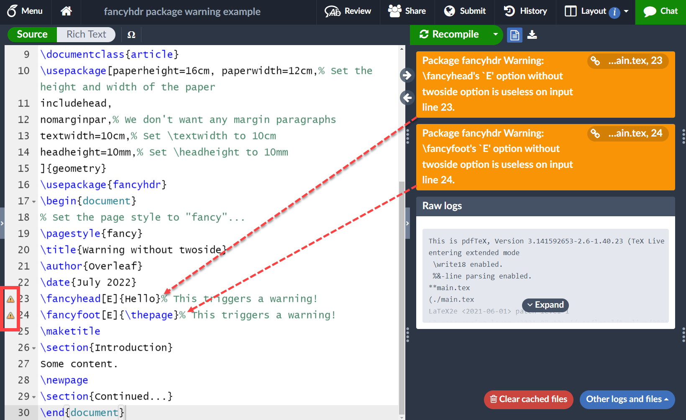

Headers and footers
Introduction and overview
This article demonstrates how to modify document headers and footers using the fancyhdr package. Another option for customizing headers and footers, addressed in the companion article, How does LaTeX typeset headers and footers?, is to dig deeper into LaTeX code to define new page styles or redefine appropriate low-level commands.
Here, we start with an overview of some basic LaTeX features which define default headers and footers used within a document:
If you wish to skip the introductory material, jump to the section on the fancyhdr package. As noted, much more technical detail is contained in the companion article How does LaTeX typeset headers and footers? which explores and explains the low-level, mark-based, mechanisms used by TeX engines to create headers and footers—and why the \mark command is needed.
LaTeX document classes
Different types of LaTeX document are created using document classes; for example, LaTeX provides a number of standard classes:
bookreportarticleletter
which are used via the \documentclass command:
\documentclass[⟨options⟩]{⟨class⟩}
where:
⟨class⟩could be one of the standard types (book,report,article,letter) or one contributed by individuals and institutions.⟨options⟩are settings used to configure a particular instance of the document⟨class⟩. The available⟨options⟩depend on the⟨class⟩being used.
One- or two-sided documents
If a LaTeX document class supports different layouts for left-facing pages (even page numbers) and right-facing pages (odd page numbers) the document’s headers and footers are usually different on left- and right-facing pages. Defaults for the standard document classes are:
book: two-sidedarticleandreport: single-sided but can become two-sided by using the optiontwoside; for example:
\documentclass[twoside]{article}
or
\documentclass[twoside]{report}
Default ⟨options⟩ of document classes
LaTeX applies a set of default ⟨options⟩ to each of the standard document classes:
article: default⟨options⟩areletterpaper,10pt,oneside,onecolumn,finalreport: default⟨options⟩areletterpaper,10pt,oneside,onecolumn,final,openanybook: default⟨options⟩areletterpaper,10pt,twoside,onecolumn,final,openrightletter: default⟨options⟩areletterpaper,10pt,oneside,onecolumn,final
Document classes also provide commands which enable users to structure their documents into logical divisions such as parts, chapters, sections, subsections and so forth. As you might expect, the book class has a rich set of document structuring commands.
LaTeX page styles
In LaTeX, the default format of a document’s headers and footers are determined by the page style being used. Several predefined page styles are provided by LaTeX:
empty: no headers or footers on pagesplain: no page headers, footers consist of a centered page numberheadings: no footers, headers contains class-specific information and page numbermyheadings: no footers, headers contains page number and user-supplied information
Default page styles of standard document classes
Unless the user specifies otherwise, the standard document classes apply a default page style:
- the
articleandreportclasses useplain - the
bookclass usesheadings
Setting page styles
Core LaTeX provides two commands to change (set) the page style:
\pagestyle{⟨style⟩}: sets the style of the current page, and all subsequent pages, to⟨style⟩
\thispagestyle{⟨style⟩}: sets style of the current page only to⟨style⟩
The style of page numbers is set with the command \pagenumbering{⟨numberstyle⟩}; for example, \pagenumbering{roman} typesets page numbers in lowercase Roman numerals: i, ii, iii...
LaTeX page layout
Because headers and footers form part of the overall page layout/design it can be helpful to understand a little more about LaTeX's model of page layout; the following Overleaf articles might be of interest:
- for an introduction to LaTeX page layout, the Overleaf article Page size and margins demonstrates how to use the
geometrypackage;
- if you want more detail, we suggest the article A visual guide to LaTeX’s page layout parameters.
As noted, LaTeX provides several built-in page styles used as defaults for the standard document classes. The following short examples demonstrate the default headers and footers produced by standard document classes using LaTeX's default ⟨options⟩ for each class.
\documentclass{article}
% Choose a conveniently small page size
\usepackage[paperheight=16cm,paperwidth=12cm,textwidth=10cm]{geometry}
\usepackage{lipsum}% for some dummy text
\title{An article class example}
\author{Overleaf}
\begin{document}
\maketitle
\section{In the beginning...}
\lipsum[2]
\section{Another section}
\lipsum[1]
\section{Yet another}
\lipsum[1]
Open this article class example in Overleaf
\documentclass{report}
% Choose a conveniently small page size
\usepackage[paperheight=16cm,paperwidth=12cm,textwidth=10cm]{geometry}
\usepackage{lipsum}% for some dummy text
\title{A report class example}
\author{Overleaf}
\begin{document}
\maketitle
\chapter{One}
\section{In the beginning...}
\lipsum[2]
\section{Another section}
\lipsum[1]
\section{Yet another}
\lipsum[1]
Open this report class example in Overleaf
\documentclass{book}
% Choose a conveniently small page size
\usepackage[paperheight=16cm,paperwidth=12cm,textwidth=10cm]{geometry}
\usepackage{lipsum}% for some dummy text
\title{Memoirs of a \TeX{} user}
\author{Overleaf}
\begin{document}
\frontmatter
\maketitle
This is frontmatter which uses Roman numerals.
\mainmatter
\chapter{Where do I start}
\lipsum[4]
\section{In the beginning...}
\lipsum[1]
\section{Yet another section}
\lipsum[1]
\chapter{Things I remember}
\section{Oh and a further section}
\lipsum[1]
Open this book class example in Overleaf
The packages/commands required to change headers and footers can vary according to the document class being used; for example, the TeX FAQ notes use of the scrlayer-scrpage package, rather than fancyhdr, for improved integration with the KOMA-script document classes. Additionally, the memoir document class contains its own features (user commands) to change headers and footers.
Using the fancyhdr package
To load the fancyhdr package add the following line to your document preamble:
\usepackage[⟨options⟩]{fancyhdr}
where ⟨options⟩ are explained in the package documentation.
The following diagram summarises the general structure of headers and footers defined by fancyhdr for a two-sided document:
- headers and footers can contain different content on left (even) and right (odd) pages
- headers and footers are structured into three “zones”
- Left
- Centre
- Right
- headers and footers can contain an optional rule (line)
In the L zone the content is typeset flush left; in the C zone it is centred and in the R zone it is typeset flush right.

Commands provided by fancyhdr use single-letter abbreviations, called “coordinates”, to identify specific header and footer zones and page locations:
OorE: to specifyOdd orEven pagesHorF: to indicateHeader orFooterL,CorR: for theLeft,Centre andRight “zone” of the header or footer
Introducing the commands
This section discusses several fancyhdr commands used to define the content of headers and footers:
\fancyhead[locations]{content}\fancyfoot[locations]{content}\fancyhf[locations]{content}
Each of these commands uses “coordinates” to define header and footer locations where the content should appear. Depending on which command you use, (up to) 2 or (up to) 3 coordinates may be required to fully specify the desired locations.
Commands using up to 2 coordinates
The following commands require up to 2 coordinates to specify particular locations in a header or footer:
\fancyhead[locations]{content}: assumes theHeader coordinate\fancyfoot[locations]{content}: assumes theFooter coordinate
where locations is an optional comma-separated list of positions, specified by 1 or 2 coordinates, in which to place content.
Double-sided document example
The following example is taken from the fancyhdr documentation:
\documentclass{book}
\usepackage[paperheight=16cm, paperwidth=12cm,% Set the height and width of the paper
includehead,
nomarginpar,% We don't want any margin paragraphs
textwidth=10cm,% Set \textwidth to 10cm
headheight=10mm,% Set \headheight to 10mm
]{geometry}
\usepackage{fancyhdr}
\begin{document}
% Set the page style to "fancy"...
\pagestyle{fancy}
%... then configure it.
\fancyhead{} % clear all header fields
\fancyhead[RO,LE]{\textbf{The performance of new graduates}}
\fancyfoot{} % clear all footer fields
\fancyfoot[LE,RO]{\thepage}
\fancyfoot[LO,CE]{From: K. Grant}
\fancyfoot[CO,RE]{To: Dean A. Smith}
% Some content:
This is page 1.\newpage
This is page 2.
\end{document}
Open this fancyhdr example in Overleaf
The following graphic shows the output produced by this example:

Notes on the commands used
\fancyhead{}: clears the settings for the headers\fancyfoot{}: clears the settings for the footers\fancyhead[RO,LE]{\textbf{The performance of new graduates}}: uses the header locationsRO(RightOdd) andLE(LeftEven) to place the content\textbf{The performance of new graduates}\fancyfoot[LE,RO]{\thepage}: uses the footer locationsLE(LeftEven) andRO(RightOdd) to place the page number output by\thepage\fancyfoot[LO,CE]{From: K. Grant}: uses the footer locationsLO(LeftOdd) andCE(CentreEven) to place the contentFrom: K. Grant\fancyfoot[CO,RE]{To: Dean A. Smith}: uses the footer locationsCO(CentreOdd) andRE(RightEven) to place the contentTo: Dean A. Smith
One-sided and two-sided documents
The diagram above shows the structure of headers and footers for a two-sided document, such as the book class, or article/report classes loaded using the option twoside.
Single-sided document examples
For single-sided documents based on the article or report classes, all pages are, in effect, right-hand pages so the “coordinates” for Even pages do not apply. We also don’t need to specify the O coordinate and can use a single L, C or R value:
\documentclass{article}
\usepackage[paperheight=16cm, paperwidth=12cm,% Set the height and width of the paper
includehead,
nomarginpar,% We don't want any margin paragraphs
textwidth=10cm,% Set \textwidth to 10cm
headheight=10mm,% Set \headheight to 10mm
]{geometry}
\usepackage{fancyhdr}
\begin{document}
% Set the page style to "fancy"...
\pagestyle{fancy}
\title{Single-sided document}
\author{Overleaf}
\date{August 2022}
\fancyhf{} % clear existing header/footer entries
% We don't need to specify the O coordinate
\fancyhead[R]{Hello}
\fancyfoot[L]{\thepage}
\maketitle
\section{Introduction}
Some content.
\newpage
\section{Continued...}
\end{document}
Open this fancyhdr example in Overleaf
The fancyhdr package issues a warning if you try to specify headers or footers using the E coordinate within single-sided documents:
\documentclass{article}
\usepackage[paperheight=16cm, paperwidth=12cm,% Set the height and width of the paper
includehead,
nomarginpar,% We don't want any margin paragraphs
textwidth=10cm,% Set \textwidth to 10cm
headheight=10mm,% Set \headheight to 10mm
]{geometry}
\usepackage{fancyhdr}
\begin{document}
% Set the page style to "fancy"...
\pagestyle{fancy}
\title{Warning without twoside}
\author{Overleaf}
\date{July 2022}
\fancyhead[E]{Hello}% This triggers a warning!
\fancyfoot[E]{\thepage}% This triggers a warning!
\maketitle
\section{Introduction}
Some content.
\newpage
\section{Continued...}
\end{document}
Open this erroneous fancyhdr example in Overleaf
As can be seen in this annotated screengrab:

the example above produces the warnings:
Package fancyhdr Warning: \fancyhead's `E' option without twoside option is useless on input line 23.
Package fancyhdr Warning: \fancyfoot's `E' option without twoside option is useless on input line 24.
Using a single coordinate in a two-sided document: omitting E and O
If you use \fancyhead or \fancyfoot in a two-sided document but omit the E and O from a location and use only 1 coordinate, L, C or R, the content will be placed in that location on even and odd pages.
Example
The following example demonstrates omitting E and O from locations specified in \fancyhead and \fancyfoot. It also uses the following commands:
\pagestyle{fancy}to set the page style to one configured byfancyhdr\fancyhead{}\fancyfoot{}are used to clear all headers and footers (see also\fancyhf{})
\begin{document}
% Set the page style to "fancy"...
\pagestyle{fancy}
%... then configure it.
% Clear all headers and footers (see also \fancyhf{})
\fancyhead{}\fancyfoot{}
% Set the Centre header location but do not specify O or E
\fancyhead[C]{In the centre of the header on all pages: \thepage}
% Set the Left footer location but do not specify O or E
\fancyfoot[L]{On the left of the footer on all pages: \thepage}
% Some content:
This is page 1.\newpage
This is page 2.
Open this fancyhdr example in Overleaf
The following graphic is an annotated version of the output produced by this code:

As can be seen from this graphic, the following code
\fancyhead[C]{In the centre of the header on all pages: \thepage}
sets the Centre header location but does not specify if it should appear on Odd or Even pages. The omission of O and E coordinates results in the Centre zone header content appearing on odd and even pages.
In addition, this code fragment
\fancyfoot[L]{On the left of the footer on all pages: \thepage}
sets the Left footer location but does not specify if it should appear on odd or even pages. The omission of O and E coordinates results in the Left zone content appearing in the left zone of the footer appearing on odd and even pages.
Using a single coordinate in a two-sided document: omitting L, C and R
If you omit L, C and R from a location in a two-sided document, and use only 1 coordinate, E or O, the content will be placed in all three zones on the even or odd page pages specified in the location.
Example
The following example sets the header and footer for odd and even pages but none of the locations in the \fancyhead and \fancyfoot commands specify the “zone”, L, C or R, in which the content should be placed. Note how the content is reproduced in all three zones.
\begin{document}
% Set the page style to "fancy"...
\pagestyle{fancy}
%... then configure it.
% Clear all headers and footers (see also \fancyhf{})
\fancyhead{}\fancyfoot{}
% Set the header and footer for Even
% pages but omit the zone (L, C or R)
\fancyhead[E]{Header: even page \thepage}
\fancyfoot[E]{Footer: even page \thepage}
% Set the header and footer for Odd
% pages but omit the zone (L, C or R)
\fancyhead[O]{Header: odd page \thepage}
\fancyfoot[O]{Footer: odd page \thepage}
% Some content:
This is page 1.\newpage
This is page 2.
Open this fancyhdr example in Overleaf
The following graphic is an annotated version of the output produced by this code:

The following code sets the header and footer for Even pages but omits a zone coordinate (L, C or R):
\fancyhead[E]{Header: even page \thepage}
\fancyfoot[E]{Footer: even page \thepage}
This results in:
- even-page headers contain
Header: even page \thepagein all three header zones (L,CandR) - even-page footers contain
Footer: even page \thepagein all three footer zones (L,CandR)
The following code sets the header and footer for Odd pages but also omits a zone coordinate (L, C or R):
\fancyhead[O]{Header: odd page \thepage}
\fancyfoot[O]{Footer: odd page \thepage}
This produces results similar to those for even pages:
- odd-page headers contain
Header: odd page \thepagein all three header zones (L,CandR) - odd-page footers contain
Footer: odd page \thepagein all three footer zones (L,CandR)
\fancyhf: using up to 3 coordinates
\fancyhf is a more general command which can be used to combine specifications for headers and footers. To do this it supports the coordinates H (for Header) and F (for Footer). The general form of the command is
\fancyhf[locations]{content}
where locations is a optional comma-separated list of locations, specified by 2 or 3 coordinates, to place content.
Because this command can specify the content of headers and footers you need the third coordinate, H or F to fully specify the locations. For example, to use (refer to) the centre zone of footers on the left-hand (even) pages you would specify this as the three coordinates EFC:
Even-numbered pagesFooterCentre zone
Note that the order of the coordinates is not important: EFC produces the same result as FEC and so forth.
The following example uses \fancyhf to place content in the Centre zones of all headers and footers:
\begin{document}
\pagestyle{fancy}
\fancyhf{}
\fancyhf[EHC]{Even+Header+Centre}
\fancyhf[EFC]{Even+Footer+Centre}
\fancyhf[OFC]{Odd+Footer+Centre}
\fancyhf[OHC]{Odd+Header+Centre}
\lipsum[1]\newpage\lipsum[1]
Open this \fancyhf example in Overleaf
The following graphic is an annotated version of the output produced by the previous example:

Examples
The following rule-related commands are provided by version 4.x of fancyhdr:
\headrulewidth: macro to define the thickness of a line under the header\footrulewidth: macro to define the thickness of a line above the footer\headruleskip: macro to define the distance between the line and the header text (only available since version 4.0)\footruleskip: macro to define the distance between the line and the footer text\headrulemacro to completely redefine header rules (lines)\footrulemacro to completely redefine footer rules (lines)\headwidtha length parameter that defines the total width of the headers and footers
NOTES:
- the default value of
\headrulewidthis0.4ptand default value of\footrulewidthis0ptso, by default, that rule is not shown in footers. - you must use
\renewcommandto change the width value stored by\headrulewidthor\footrulewidth - similarly, use
\renewcommandto change the space between header or footer text, set by\headruleskipor\footruleskiprespectively
For example:
\renewcommand{\headrulewidth}{2pt}
\renewcommand{\footrulewidth}{4pt}
\renewcommand{\headruleskip}{10mm}
\renewcommand{\footruleskip}{10pt}
- Note: It is because the following commands are macros
\headrulewidth\footrulewidth\headruleskip\footruleskip
that you must use \renewcommand to change values stored by these commands. The following code will not work:
\setlength{\headrulewidth}{2pt}% does not work
\setlength{\headruleskip}{10mm}% also will not work
The next example changes rule widths and shows how to modify the distance between rules (lines) and header and footer text—using \headruleskip and \footruleskip:
\begin{document}
% Set the page style to "fancy"...
\pagestyle{fancy}
%... then configure it.
\renewcommand{\headruleskip}{10mm}
\renewcommand{\footruleskip}{10pt}
\renewcommand{\headrulewidth}{2pt}
\renewcommand{\footrulewidth}{4pt}
% Some content:
\chapter{Wrangling settings}
\section{Page 1}
This is page 1.
\newpage
\section{Page 2}
This is page 2.
\end{document}
Open this fancyhdr example in Overleaf
Using fancy rules in headers
The following example is derived from one contained in the fancyhdr package documentation which uses the fourier-orns package.
\documentclass{book}
\usepackage[paperheight=16cm, paperwidth=12cm,% Set the height and width of the paper
includehead,
nomarginpar,% We don't want any margin paragraphs
textwidth=10cm,% Set \textwidth to 10cm
headheight=14pt,% Set \headheight to 14pt to accommodate our fancy rule!
]{geometry}
\usepackage{fourier-orns}
\usepackage{fancyhdr}
\renewcommand{\headrule}{%
\vspace{-8pt}\hrulefill
\raisebox{-2.1pt}{\quad\decofourleft\decotwo\decofourright\quad}\hrulefill}
\title{Decorative line}
\author{Overleaf}
\date{August 2022}
\begin{document}
\pagestyle{fancy}
\fancyhf{}
\fancyhead[LE]{\nouppercase{\rightmark\hfill\leftmark}}
\fancyhead[RO]{\nouppercase{\leftmark\hfill\rightmark}}
\fancyfoot[LE,RO]{\hfill\thepage\hfill}
\chapter{Fancy rules!}
\section{Introduction}
This example is taken from the \texttt{fancyhdr} documentation.
\newpage
\section{See the header}
\newpage
\section{Yes, very neat!}
\end{document}
This example produces the following output:

- Notes on commands in this example
\headrule: a macro which defines how to draw the decorative line in the header. Here it is redefined to draw a line containing ornaments from thefourier-ornspackage.\leftmarkand\rightmark: these commands are used to obtain “mark data” inserted by LaTeX’s sectioning commands. For a more complete explanation of these commands we recommend the companion article How does LaTeX typeset headers and footers?\nouppercase: a command provided by thefancyhdrpackage to prevent header or footer text being typeset in uppercase, which is the default style for LaTeX headers and footers
fancyhdr warning: \headheight is too small
If you receive the fancyhdr warning that \headheight is too small you can reset it to some value height by writing
\setlength{\headheight}{height}
but the recommended solution is to use the geometry package and apply its headheight=height option to set the value of \headheight to height.
The following example revisits our earlier book class example and resets \headheight to 2cm via headheight=2cm:
\documentclass{book}
\usepackage[paperheight=16cm, paperwidth=12cm,% Set the height and width of the paper
includehead,% See below for an explanation
nomarginpar,% We don't want any margin paragraphs
textwidth=10cm,% Set \textwidth to 10cm
headheight=2cm,% Set \headheight to 2cm
showframe % Show the page layout
]{geometry}
\title{Memoirs of a \TeX{} user}
\author{Overleaf}
\begin{document}
\frontmatter
\maketitle
This is frontmatter which uses Roman numerals.
\mainmatter
\chapter{Where do I start}
Chapter 1: A short chapter that ends on page 1.
\chapter{Things I remember}
Chapter 2: Starts on page 3, so \LaTeX{} inserts a ``blank'' page 2.
\end{document}
Open in Overleaf: example to set \headheight using the geometry package
Notes on the geometry package
The example above uses several options of the geometry package:
nomarginpar: specifies that we don't want any margin paragraphstextwidth=10cm: sets a value (10cm) for\textwidth, one of LaTeX’s page layout parametersheadheight=2cm: sets a value (2mm) for\headheight, one of LaTeX’s page layout parametersshowframe: draws the page layout
The geometry package also provides options which affect how it calculates certain values for LaTeX page layout parameters; for example:
includeheadincludefoot
Our example (above) used includehead to ensure that the height of the text area is directly affected by changing the value of headheight. The following diagram, copied from the geometry package documentation, demonstrates how the includehead and includefoot options affect calculation of the document’s text height:

Note that the geometry package refers to the height of the text area via the option textheight whereas LaTeX uses the similarly-named \textheight page layout parameter.
Source: edited version of code posted on tex.stackexchange: https://tex.stackexchange.com/a/282840.
This example creates a footer which displays the current page number and the total number of pages. It uses the lastpage package together with a modified version of the plain page style implemented via the \fancypagestyle command provided by fancyhdr.
\documentclass[12pt]{article}
\usepackage[paperheight=16cm, paperwidth=12cm,% Set the height and width of the paper
includehead,% See below for an explanation
nomarginpar,% We don't want any margin paragraphs
textwidth=10cm,% Set \textwidth to 10cm
headheight=16pt % Set \headheight to 16pt to avoid fancyhr warnings
]{geometry}
\usepackage{lastpage}
\usepackage{fancyhdr}
\usepackage{lipsum} % just for mock text
\pagestyle{fancy}
\renewcommand{\headrulewidth}{0pt}
\fancyfoot[C]{\thepage\ of \pageref{LastPage}}
\fancypagestyle{plain}{%
\renewcommand{\headrulewidth}{0pt}%
\fancyhf{}%
\fancyfoot[C]{\thepage\ of \pageref{LastPage}}}
\begin{document}
\title{Another fancyhdr demo}
\author{\texttt{tex.stackexchange} \textit{et al}}
\maketitle
\lipsum
\end{document}
As noted in the fancyhdr package documentation, if you create a document using
- the
bookclass without theopenanyoption, or - the
reportclass with theopenrightoption
any part (\part{...}) and chapter (\chapter{...}) pages will start on odd-numbered (right-hand) pages.
Occasionally, LaTeX needs to insert a "blank" page to ensure the next chapter or part page starts on a right-hand page—but that "blank" page will still contain headers that many people consider to be unsightly.
Example of "blank" pages in a book class document
The following book class example creates 5 pages including 2 right-hand facing chapter pages.
\begin{document}
\frontmatter
\maketitle
This is frontmatter which uses Roman numerals.
\mainmatter
\chapter{Where do I start}
Chapter 1: A short chapter that ends on page 1.
\chapter{Things I remember}
Chapter 2: Starts on page 3, so \LaTeX{} inserts a ``blank'' page 2.
\end{document}
Open this book class example in Overleaf
As shown in the following annotated graphic, chapter 2 starts on page 3 because LaTeX inserted page 2 which is nominally “blank” but contains an unsightly header.

A variety of mechanisms—code and packages—can be used to ensure inserted pages, such as page 2 above, are completely blank. Here are some examples:
- use the
emptypagepackage by adding the following line to your document's preamble:
\usepackage{emptypage}
- manually insert a blank page at the end of chapter 1 so that chapter 2 will naturally start on a right-hand page, removing the need for LaTeX to force a new page. The following code is suggested in the
fancyhdrpackage documentation:
\clearpage
\begingroup
\pagestyle{empty}\cleardoublepage
\endgroup
- similarly, you can create a new page at the end of chapter 1 and set its style to empty using
\thispagestyle{empty}:
\newpage\thispagestyle{empty}
For more information on, and examples of, using truly blank pages, consult the TUG FAQ or search for questions tagged blank-page on TeX.stackechange.
- TIP: The TeX FAQ has an entry titled to get rid of page numbers which contains some useful advice.
Changing the style of a single page
Sometimes is convenient to change the style of a specific page; for example, removing the header and footer from the current chapter page:
\begin{document}
\maketitle
\chapter{Using different page styles}
\lipsum[1] % via \usepackage{lipsum}
\chapter{Sample Chapter}
\thispagestyle{empty} % remove headers/footers from the chapter page
\lipsum[1]
\clearpage
\section{New section}
\lipsum[1]
\end{document}
Headers and footers produced by fancyhdr can contain multiple lines. The following example is based on the fancyhdr documentation but expanded to include a multiline header. This example uses the datetime2 package command \DTMnow to insert the date on which the draft document was typeset. The command \\ is used to terminate the first line of the header.
\documentclass{book}
\usepackage[paperheight=16cm, paperwidth=12cm,% Set the height and width of the paper
includehead,
nomarginpar,% We don't want any margin paragraphs
textwidth=10cm,% Set \textwidth to 10cm
headheight=25pt,% Set \headheight to 25pt to accommodate the multiline header
]{geometry}
\usepackage{fancyhdr}
\usepackage{datetime2}
\begin{document}
% Set the page style to "fancy"...
\pagestyle{fancy}
%... then configure it.
\fancyhead{} % clear all header fields
\fancyhead[RO,LE]{\textbf{DRAFT} (Typeset \DTMnow)\\\textbf{The performance of new graduates}}
\fancyfoot{} % clear all footer fields
\fancyfoot[LE,RO]{\thepage}
\fancyfoot[LO,CE]{From: K. Grant}
\fancyfoot[CO,RE]{To: Dean A. Smith}
% Some content:
This is page 1.\newpage
This is page 2.
\end{document}
Open this fancyhdr example in Overleaf
The following graphic shows the output produced by this example:

Overleaf guides
- Creating a document in Overleaf
- Uploading a project
- Copying a project
- Creating a project from a template
- Using the Overleaf project menu
- Including images in Overleaf
- Exporting your work from Overleaf
- Working offline in Overleaf
- Using Track Changes in Overleaf
- Using bibliographies in Overleaf
- Sharing your work with others
- Using the History feature
- Debugging Compilation timeout errors
- How-to guides
- Guide to Overleaf’s premium features
LaTeX Basics
- Creating your first LaTeX document
- Choosing a LaTeX Compiler
- Paragraphs and new lines
- Bold, italics and underlining
- Lists
- Errors
Mathematics
- Mathematical expressions
- Subscripts and superscripts
- Brackets and Parentheses
- Matrices
- Fractions and Binomials
- Aligning equations
- Operators
- Spacing in math mode
- Integrals, sums and limits
- Display style in math mode
- List of Greek letters and math symbols
- Mathematical fonts
- Using the Symbol Palette in Overleaf
Figures and tables
- Inserting Images
- Tables
- Positioning Images and Tables
- Lists of Tables and Figures
- Drawing Diagrams Directly in LaTeX
- TikZ package
References and Citations
- Bibliography management with bibtex
- Bibliography management with natbib
- Bibliography management with biblatex
- Bibtex bibliography styles
- Natbib bibliography styles
- Natbib citation styles
- Biblatex bibliography styles
- Biblatex citation styles
Languages
- Multilingual typesetting on Overleaf using polyglossia and fontspec
- Multilingual typesetting on Overleaf using babel and fontspec
- International language support
- Quotations and quotation marks
- Arabic
- Chinese
- French
- German
- Greek
- Italian
- Japanese
- Korean
- Portuguese
- Russian
- Spanish
Document structure
- Sections and chapters
- Table of contents
- Cross referencing sections, equations and floats
- Indices
- Glossaries
- Nomenclatures
- Management in a large project
- Multi-file LaTeX projects
- Hyperlinks
Formatting
- Lengths in LaTeX
- Headers and footers
- Page numbering
- Paragraph formatting
- Line breaks and blank spaces
- Text alignment
- Page size and margins
- Single sided and double sided documents
- Multiple columns
- Counters
- Code listing
- Code Highlighting with minted
- Using colours in LaTeX
- Footnotes
- Margin notes
Fonts
Presentations
Commands
Field specific
- Theorems and proofs
- Chemistry formulae
- Feynman diagrams
- Molecular orbital diagrams
- Chess notation
- Knitting patterns
- CircuiTikz package
- Pgfplots package
- Typesetting exams in LaTeX
- Knitr
- Attribute Value Matrices
Class files
- Understanding packages and class files
- List of packages and class files
- Writing your own package
- Writing your own class